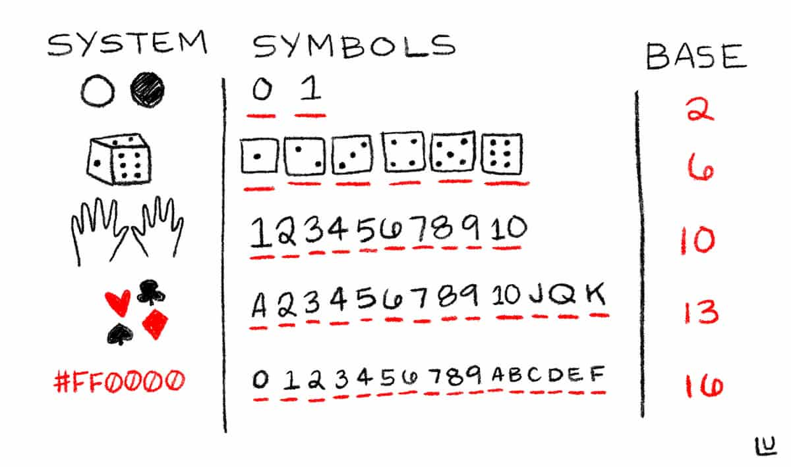

Demystifing the HEX
Computer programs are composed of 1s and 0s, something is either on or off, everything else is a composition on top of this concept. This is analogous to how the universe is made up of atoms. Just as we do not see atoms, we do not see the binary representation of data. However, we as web developers do in many cases come quite close to working directly with binary numbers without even knowing it! For example, binary numbers are pleasantly obscured in the wonderful concept of CSS HEX colors; Let’s dig in!
You may be familiar with a few colors in HEX #FFFFFF is white, #000000 is black, #FF0000 is red and so on. While yes these are “HEX” colors, what does that even mean? What is HEX? HEX is short for HEXadecimal which is a fancy way to say a a unit that represents 16 possible values; In this case using 0 - 9 on the numeric scale and then A - F on the alphabetical scale to represent 16 possible values from [0 - 15].
Scale units:
In CSS HEX colors are used to represent RGB (red, green, and blue) colors in a somewhat terse and understandable way. For HEX colors each pair of HEX units represents one color channel, and each color channel has a possible value from 0 to 255
As an example let’s look at the color red #FF0000 , which breaks down to
The question arises though how does
To start let’s look at a more familiar non-HEX number
The algorithm can be described as
- take the first $digit (least significant value)
3 [2,5,3], - look at the right based $index of the digit in the sequence which would be
0 for3 - Raise the base / radix to the power of $index and then multiply that by the $digit.
| Hold up a moment, what is this base / radix thing? |
In mathematics, a base or radix is the number of different digits or combination of digits and letters that a system of counting uses to represent numbers. For example, the most common base used today is the decimal system, base = 10. (source)Looking at our HEX example, we can see how HEXadecimal numbers are base 16 and thus can represent 16 possible values via (0 -> F) within a single digit. Humans typically work in base 10 (0 -> 9) and Robots 🤖 like to operate in base 2 (0 -> 1). It makes you wonder if humans had 12 fingers if we would count in base 12? |
In the case of
We can then generalize this math a bit into code like this:
function toNumber(digits = [2,5,3], base = 10) {
let sum = 0;
for (let i = 0; i < digits.length; i++) {
// walk the digits in reverse order
// 3 … 5 … 2
// multiple each unit by base to the exponent power
// digit 2, index of 0 … 10^ 0 === 1
// digit 5, index of 1 … 10 ^ 1 === 10
// digit 3, index of 2 … 10 ^ 2 === 100
sum += digits[digits.length - (i + 1)] * ((Math.pow(base, i)));
}
return sum;
}
We can apply this same working methodology to convert #FD0000 which has a base of 16 to the base 10 number of 253.
[F, D]
(D(13) * 16^0 +
F(15) * 16^1) === 253
All of which to say a two-digit HEX encoding of color space gives us 256 possible values for each red, green, and blue channel yielding a color permutation space of 167772156 colors! Using this new found information we can apply it to generate random colors via a script like this:
// Math.random generates a number from 0 -> 1
const color = ‘#’ + Math.floor((Math.random() * 16777215)).toString(16);| toString on a number? |
|
The |
I hope that the next time you encounter a HEX string when changing the background color of a div, or the text on the page that you now feel comfortable explaining what this series of base-16 digits represents 🤓.
Thanks so much to Fabián Cañas and Susie Lu for reviewing this post. Sam Saccone @samccone